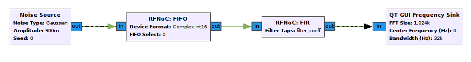
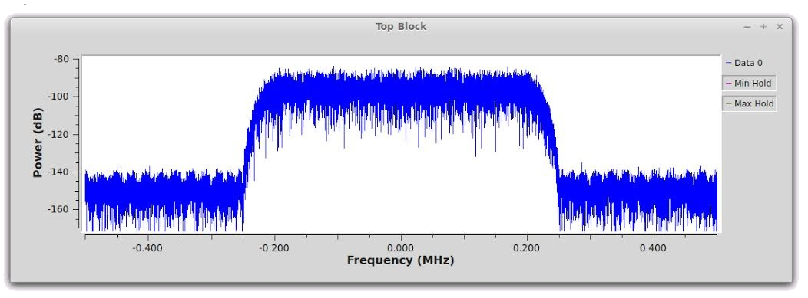

RFNoC™ (RF Network on Chip)
Current FPGAs, like the Xilinx Kintex-7 and Zynq-7000 series used in third generation USRP SDRs, have incredible computational capability, but taking advantage of that capability can be difficult when using traditional FPGA design flows. RFNoC is designed to allow you to efficiently harness the full power of the latest generations of FPGAs without being an expert firmware developer. It provides the capability to create FPGA applications as easily as you can create GNU Radio flowgraphs. This includes the ability to seamlessly transfer data to & from an FPGA, from the host PC in your application, dramatically improving the ease of FPGA off-loading. Having a system-level view of the entire SDR application running on both the FPGA and the host PC enables far superior development and debugging. Mixing and matching host-based and FPGA-based processing is transparent to you, and that processing can scale across multiple FPGAs and devices across a network.
Here is an example of an RFNoC flowgraph built using the GNU Radio Companion. With four blocks, data is being generated on the host, off-loaded to the FPGA for filtering, and then brought back to the host for plotting:
 Below is another RFNoC example called RFNoC fosphor, which is an RTSA-like display accelerated by an FPGA RFNoC block. Beside each design is a screenshot of the real-time display, centered at 2.45 GHz, one at 100MHz bandwidth, and the other at 200MHz bandwidth. Both were implemented on an X310 with a UBX-160 daughtercard.
RFNoC signal processing algorithms are encapsulated in easy-to-use wrappers which allow them to be dynamically connected and used as needed. These RFNoC Blocks can be developed in a number of design environments or languages including VHDL, Verilog, Xilinx Vivado HLS (C code), or any other tool that can support AXI stream interfaces. Xilinx CoreGen IP can also be easily imported into the RFNoC environment. In addition, there are a number of RFNoC Blocks already available today from within GNU Radio Companion, and the list is growing rapidly:
With all these blocks, you can now make custom FPGA designs without ever needing to write Verilog or VHDL!
RFNoC has been integrated into UHD for our third generation USRP SDRs (X300-series, E300-series, and future devices), enabling you to share FPGA designs across devices easily.